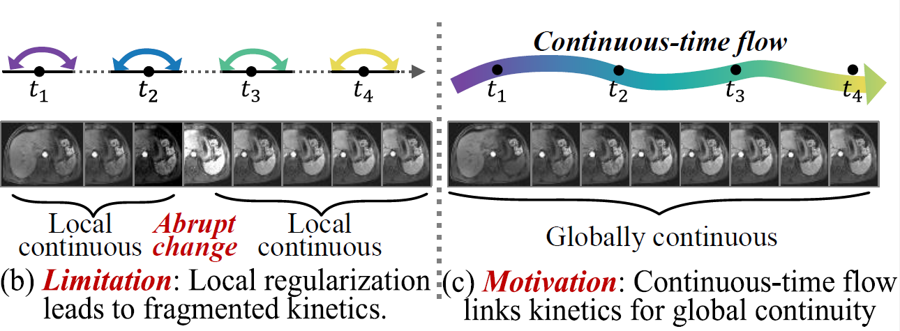
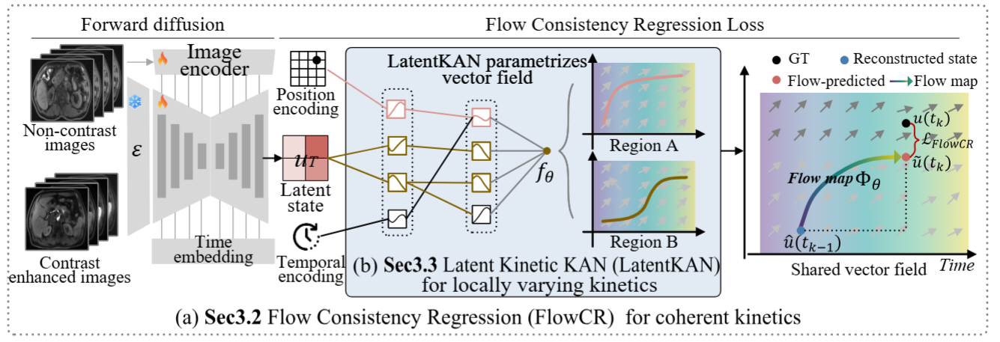

Kolmogorov-Arnold Flow Learning for MRI Contrast Enhancement Kinetics World Model
1 Case Western Reserve University, Cleveland, OH, USA
2 Jiangsu Cancer Hospital, Nanjing, Jiangsu, China
* Corresponding author
Core CodesLimitation: Local regularization leads to fragmented kinetics
Previous methods, including the current state-of-the-art MRI CEKWorld, which employs Spatiotemporal Consistency Learning (STCL), utilize smoothness regularization but still struggle with fragmented kinetics. They impose constraints on predicted states or their temporal differences at discrete observed time points to promote temporal continuity. However, these constraints regularize local changes between neighboring time points without explicitly linking enhancement dynamics across different temporal intervals. Thus, the predictions remain locally continuous but exhibit incoherent transitions between intervals, resulting in fragmented kinetics, such as abrupt intensity changes across temporal intervals.
Motivation: Continuous-time flow links kinetics for global continuity
Motivation: A continuous-time flow links evolution over time, promoting globally continuous contrast-enhancement kinetics. Ideally, a continuous-time flow connects enhancement states at different time points, allowing temporal intervals to follow a unified continuous evolution process. By constraining enhancement predictions through this flow, the model establishes a unified dynamical relationship across temporal intervals, thereby promoting globally continuous enhancement kinetics.

KAFlow Learning
Our proposed Kolmogorov-Arnold Flow Learning (KAFlow) is integrated into a conditional diffusion model to promote globally continuous contrast-enhancement kinetics. Specifically, Flow Consistency Regression (FlowCR) establishes an outer continuous-time flow learning mechanism that learns a shared latent vector field through integral endpoint consistency under sparse observations, jointly optimizing the vector field and denoising network. Within this mechanism, the Latent Kinetic Kolmogorov-Arnold Network (LatentKAN) parameterizes the shared vector field using locally supported B-splines to capture locally varying enhancement kinetics. Together, FlowCR and LatentKAN enable KAFlow to regularize diffusion training toward coherent contrast-enhanced sequences from non-contrast MRI.

Results
Explore predictions and velocity fields at any time, including extrapolation, by playing the video or dragging the timeline.